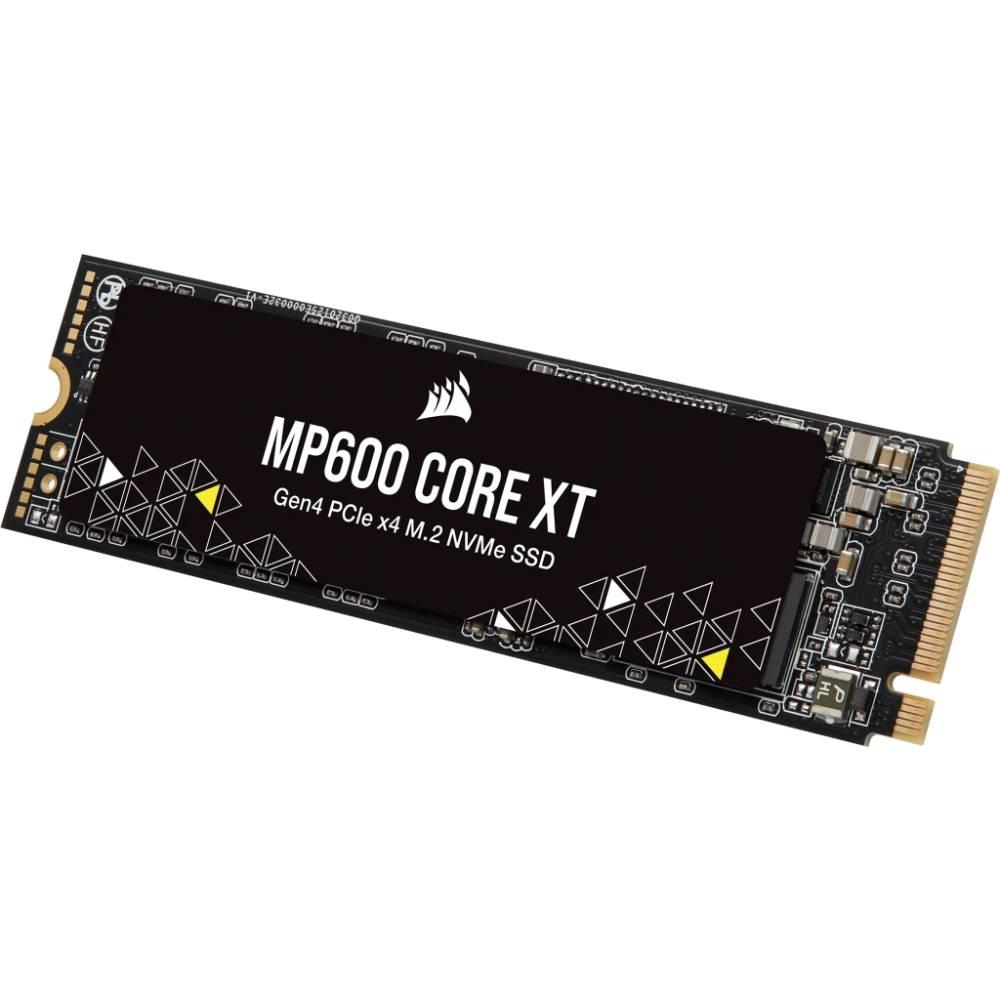

HD e SSD

Qual a diferença entre HD e SSD?
Tecnologia
Embora ambos sejam classificados como unidades de armazenamento de arquivos, saber exatamente qual é a
diferença entre HD e SSD é de suma importância para qualquer pessoa. Seja na hora de comprar uma máquina
nova ou mesmo na escolha do local onde os arquivos serão salvos, é importante conhecer qual é a melhor
opção.
Nesse artigo, mostraremos que as diferenças entre eles não se resumem à velocidade de acesso às
informações e ao preço, como muitos podem pensar. Em muitos casos, a melhor alternativa pode ser a
combinação dos dois formatos. Por isso, nada melhor do que conhecer os detalhes envolvidos no
funcionamento de cada um dos dispositivos.
O que é um HD?
O HD pode ser considerado o mais tradicional entre os dois modelos, uma vez que a sua utilização vem de
longa data. HD ou HDD é uma sigla em inglês para Hard Disk Drive, traduzido no Brasil para Disco Rígido.
Trata-se de um dispositivo cuja memória não é volátil e, por conta disso, permite o armazenamento
permanente de arquivos.
É por essa razão que é no HD que são instalados os programas e o sistema operacional, uma vez que uma
vez gravados eles não são apagados quando a máquina é desligada. No centro dessas peças há um disco
girando em alta velocidade. A quantidade de rotações varia entre 5.400 e 7.200 rotações por minuto
(RPM).
Qual a diferença entre HD e SSD?
A leitura é feita por uma cabeça com um conjunto de ímãs, situada na ponta de um braço mecânico . É por
conta disso que essas peças são tão sensíveis e movimentos bruscos podem fazer com que essa cabeça de
leitura fique desalinhada, comprometendo a leitura ou a gravação das informações.
Sendo assim, como ele possui várias peças mecânicas, está sujeito a problemas graves em caso de choques,
batidas e vibrações constantes
O que é um SSD?
Já SSD é uma sigla em inglês para Solid-State Drive – que em uma tradução direta poderia ser chamado de
Unidade de Estado Sólido, mas essa expressão em português praticamente não é utilizada. Aqui, diferente
do que acontece no HD, não há nenhum disco envolvido, uma vez que o SSD é formado por circuitos
integrados, sem partes móveis.
Por essas características, os SSDs são mais silenciosos e estão menos propensos a danos físicos. Isso
ocorre porque os dados são armazenados em células de memória flash. Falamos aqui da mesma tecnologia
usada em tablets e smartphones para armazenar arquivos.
Qual a diferença entre HD e SSD?
A estrutura de uma memória flash é composta por duas partes: o control gate (controlador) e o floating
gate. A primeira parte é responsável pela comunicação da memória com o computador, ativando a célula. Já
a segunda é uma parte isolada por duas camadas de óxido de silício com carga negativa.
HD ou SSD: qual é a melhor opção?
A resposta para essa pergunta é: depende. Agora que você já conhece tecnicamente as diferenças entre
eles, vamos falar um pouco sobre a sua utilização. Em relação aos HDs, os SSDs são mais silenciosos, são
menores, mais rápidos e mais seguros com relação a danos físicos. Outras características incluem menor
geração de calor, menor consumo de energia e tamanho físico bastante reduzido.
Ou seja, ele é melhor em quase tudo, não é mesmo? Contudo, os SSDs também têm os seus pontos negativos.
A capacidade de armazenamento, atualmente, é menor do que a dos HDs. A vida útil de um SSD também é mais
curta, uma vez que cada nova gravação acarreta em uma tensão elétrica, o que faz com que com o passar do
tempo o floating gate perca a sua capacidade de retenção. Muito embora há vários fabricantes hoje em dia
com tecnologias novas que estão resolvendo estes problemas.
Por fim, é importante lembrar que o custo de um SSD é maior do que o custo de um HD. Porém, existe uma
tendência de queda nos preços, especialmente por conta da ampla utilização nas máquinas mais recentes.
Até 2017, em média, o custo de 1 GB em um HD era de aproximadamente US$ 0,06 enquanto o mesmo 1 GB em um
SSD custava US$ 0,17. O valor por GB nos SSDs tende a cair enquanto nos HDs o valor deve se manter
estável.